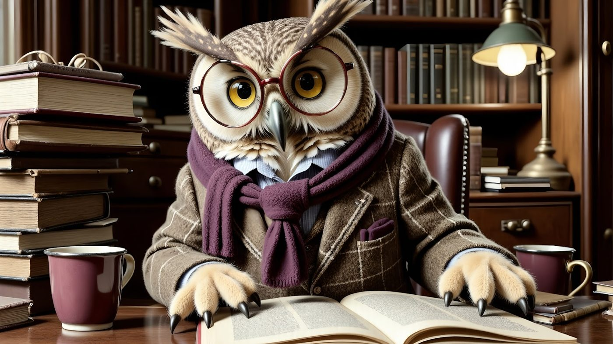
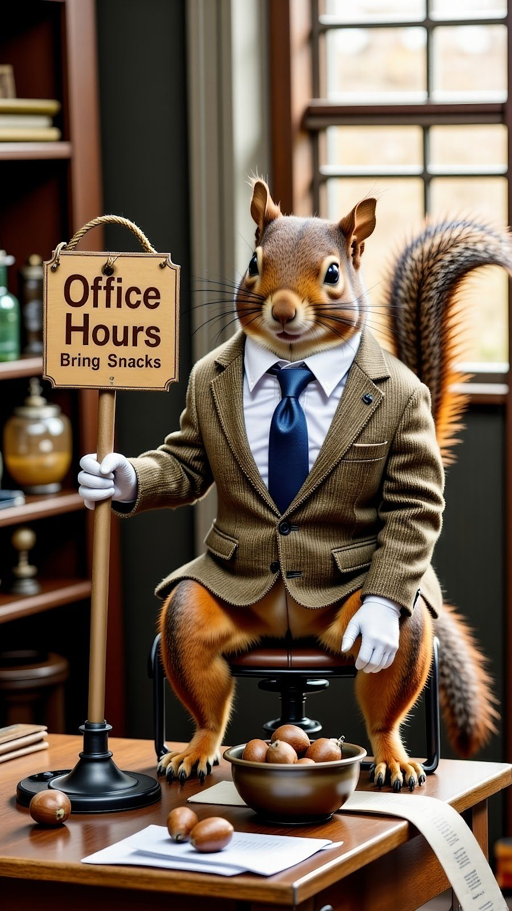
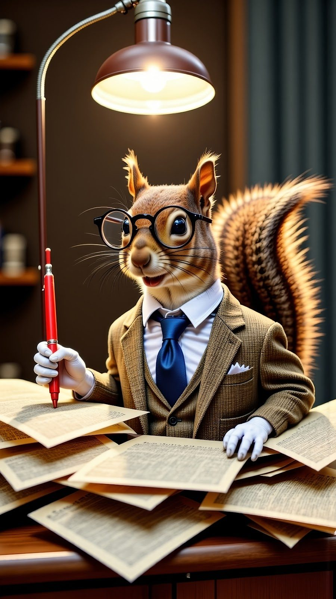
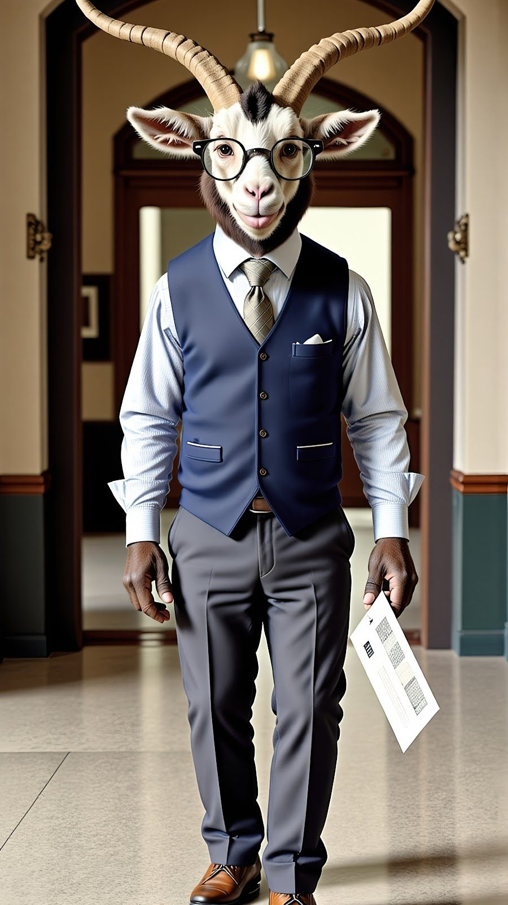

AI-Powered Creative The Animal Professors
The Animal Professors
Absurdist Academia For The Reels/TikTok Era

Genre: Creative Campaign · AI Character Development
Tools: ChatGPT · OpenArt · Photoshop · HeyGen
When TikTok erupted with viral Bigfoot and Yeti sightings, I saw the opportunity. What if we leaned into cryptid-mania but gave it an academic twist? Building on my existing photoreal AI character work, I invented The Animal Professors: a character-driven content series blending design, voice, and satire. The goal: turn AI-generated personalities into full-scale media spokes-creatures. Smart, funny, and strange enough to stop scrolls cold.

The Process
Each animal had to be more than just a face—they needed a persona. ChatGPT helped generate:
Names, quirks, and backstories
Services each professor "sold" (think academic CV coaching, syllabus design, etc.)
Dialogue scripts: witty, irreverent, scroll-stopping
Characters included:
Dr. Owlington: British, pompous, overly articulate
Prof. Ribbiton: Gruff, practical, mildly annoyed at life
Prof. Baahker: Philosophical, deep-voiced, intense
Prof. Nutters: Squirrel with the energy of ten espresso shots
It started in ChatGPT, where I developed the initial concept and scripted the characters from the ground up. Each one had a distinct academic specialty, a tone of voice, and a personality you could recognize instantly. Owlington was the overly articulate British owl with tenure energy. Ribbiton had the weary sarcasm of a frog who'd been grading final exams for twenty years. Baahker delivered deep, philosophical barbs with a gravelly Eastern European accent. And Nutter? A manic squirrel who should probably not be teaching anyone, ever.
Once I had the personalities locked in, I moved to OpenArt's Realistic Vision model to generate their visual forms. This is where the real challenge began. Photoreal AI is finicky with animals—especially hybrids. Flamingos couldn't be made to look stable. Their anatomy in humanoid form broke in almost every version, so they were cut from the lineup early on. Hooved characters like Baahker presented another problem: hands. OpenArt rendered hooves too literally, and inpainting (usually my go-to for corrections) couldn't resolve the issue cleanly. Eventually, I swapped them for human hands to preserve gesture and clarity, especially knowing these images would be animated later.
I used Photoshop to finalize the images: reshaping limbs, cleaning backgrounds, and preparing everything in vertical 9:16 framing. Each image was upscaled 4x to ensure detail integrity in HD. At this point, the characters looked ready for the real world. Now they just needed voices.
OpenArt doesn't support animation or subject detection for character lip-sync. But HeyGen does. I imported each finished character into HeyGen and paired them with unique voices that fit the scripts I'd written. British for Owlington. Deep and dry for Baahker. Nutter's voice sounded like an off-brand cartoon squirrel that drank three Red Bulls. Every line was fed from ChatGPT into HeyGen's system and fine-tuned to match tone, cadence, and timing. The result? Fully animated talking animal professors, each weirdly believable, each ready to drop knowledge (or nonsense) on TikTok, Instagram Reels, or wherever they needed to live.
Creating characters with hooves that needed to gesture. Figuring out which species don't work in photorealism. Hitting the ceiling of what inpainting could fix. Even determining the right aspect ratio for a future animation pipeline. This project had more than its share of odd problems, but each one led to better decisions about creative pipeline design, tool selection, and visual feasibility. This wasn't just a series of talking heads. It was a modular campaign, built for scale. Each character can speak to a different audience, represent a different service, or push a different message. And most importantly, they work: visually, narratively, and technically.
Why It Works
The Animal Professors are weird. They're funny. But beneath the surreal visuals is a framework anyone can follow: script, image, polish, animate. With the right tools and the right tone, AI-generated characters can tell human stories better than most human content ever will.

Want to See Them In Action?
Have a character concept that needs to come to life? Let's build it.

Want this kind of work on your brand?
If your brand should be working harder than it is, this is where it starts. One direct conversation.